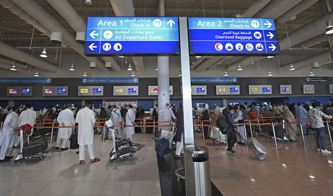

Discovery


Dubai International Airport (DXB Airport) is the main airport serving Dubai as well as the principal airport of the United Arab Emirates. The vast airport -often described as a small city itself- is located in the area of Al Garhoud, almost 14km from Dubai downtown. DXB is not only listed among the busiest airports in the world when it comes to passenger traffic, but it also serves the most international passengers in the world. In fact, in 2019, it handled more than 89 million visitors. Nevertheless, its capacity is up to 100 million passengers. It is estimated that one plane flies from Dubai Airport every 76 seconds! What’s more, it is considered the airport serving the biggest number of passengers per flight. Please note that Dubai has another international airport as well, Dubai World Central (DWC) Airport (Al Maktoum Airport), planned to become the main aviation hub with an up to 200 million passenger capacity. However, for the time being, it remains the secondary airport in Dubai.
As expected, DXB Airport shelters Emirates Airlines (although its relocation to DWC Airport in the future is taken for granted) along with the low-cost, still major air carrier Flydubai. Emirates Airlines is currently handling more than 50% of flights to and from the Middle East. Therefore, its relocation will probably signal the end of an era for Dubai International Airport. However, as of now, the airport is one driving factor of Dubai’s economic development, employing thousands of people and playing its part in the local economy.